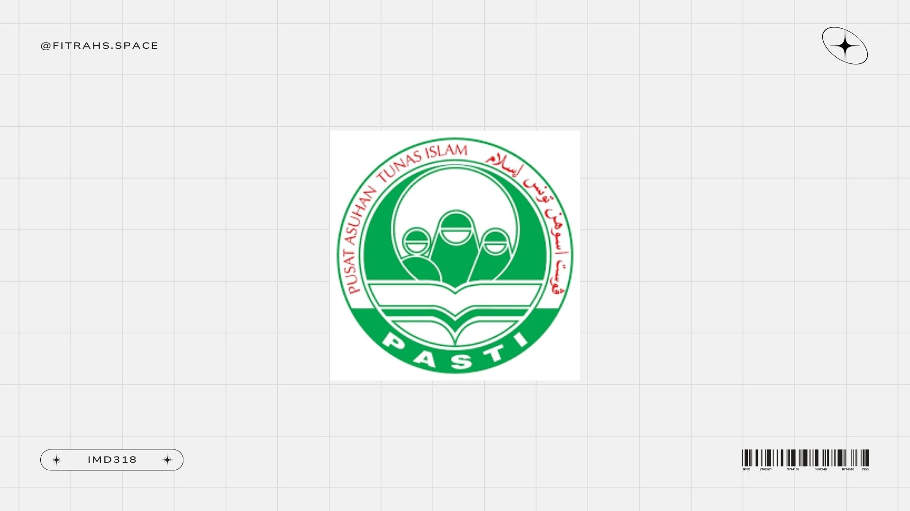
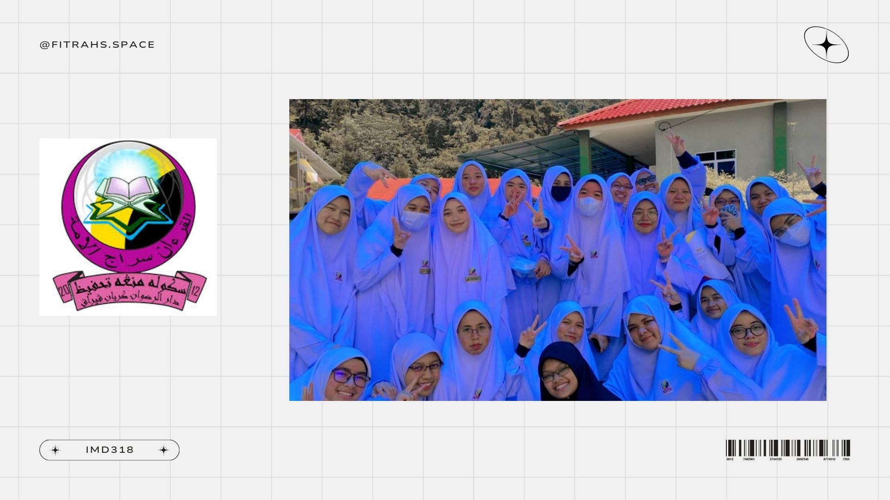
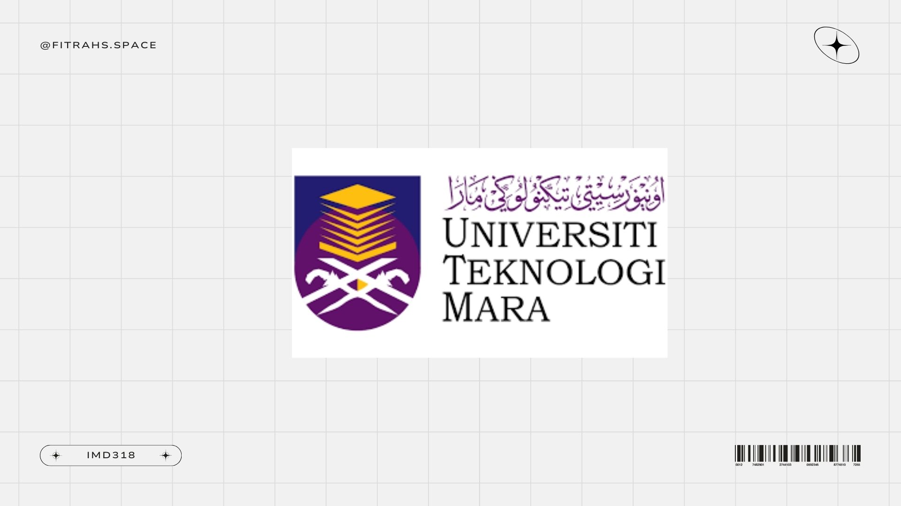

<!DOCTYPE html> 
<html>
<head>
<title> EDUCATION </title>
<style>
body
{
background-image: url('crumpled.jpg');
            background-size: cover;
            background-repeat: repeat;
            background-attachment: fixed;
            font-family: sans-serif;
            margin: 0;
            padding: 0;
            color: #000;
}

</style>

<header>
<hr>
<nav>
<table cellspacing= "30" cellpadding "40">
<tr>
<td> <a href="index.html"> Home </a> </td> 
<td> <a href="biodata.html"> Biodata </a> </td>
<td> <a href="family.html"> Family </a> </td>
<td> <a href="education.html"> Education </a> </td>
<td> <a href="experience.html"> Experience </a> </td>
<td> <a href="gallery.html"> Gallery </a> </td> 
</tr>
</table> 
</nav>
</p> 
</body>
</html> 

<p>

<h2> <center> <b> <p style="font-size : 30px ; color:black ; font-family: Sans serif"> EDUCATION </b> </center> </h2>

</body>
</head>

<body>
<head>
<style>
.city {
  background-color: WhiteSmoke;
  color: black;
  border: 2px solid black;
  margin: 20px;
  padding: 20px;
}
</style>
</head>
<body>


<br>
<div class="school">
<center> <h3> KINDERGARTEN </h3> </center>
  <center>  </center>
  <center> <p> PASTI Ar-Rahmaniah (5 years old - 6 years old) </p> </center> 
  <center> <p> <p><a href="https://www.facebook.com/share/1N85SEKj3P/">Visit Our Facebook</a></p> </center>
</div> 
<br/>

<br>
<div class="school">
<center> <h3> PRIMARY SCHOOL </h3> </center>
  <center>  </center>
  <center> <p> Sekolah Kebangsaan Kamunting (7 years old -  12 years old) </p> </center>
  <center> <p> <a href="https://www.facebook.com/share/1BxzBWcTMw/">Visit Our Facebook</a></p> </center>
</div> 
</br>

<br> 
<div class="school">
<center> <h3> HIGHSCHOOL</h3> </center>
  <center>  </center>
  <center> <p> SMTDR Kerian (13 years old - 18 years old) </p> </center> 
  <p> My high school classmates hold a special place in my heart. Each of them brought something unique to our journey, and together, we created countless unforgettable memories. Whether it was during classes, group projects, school events, or even those silly moments in between, I always cherished every second we spent together. They weren’t just classmates; they were a family that supported, inspired, and laughed with me through the ups and downs of our school years. The bond we shared taught me the value of friendship, teamwork, and making the most out of every moment.</p>
 <center> <p> <p><a href="https://www.facebook.com/share/1EHVCYxcU7/">Visit Our Facebook</a></p></center>
</div>
</br>


<br>
<div class="school">
<center> <h3>UNIVERSITY</h3> </center>
  <center>  </center>
  <center> <p> Currently studying in Information Management at UITM Kedah </p>
  <p><a href="https://kedah.uitm.edu.my/">Visit Our Website </a></p> </center>
</div>
</br> 
</body>


</body>
</html>